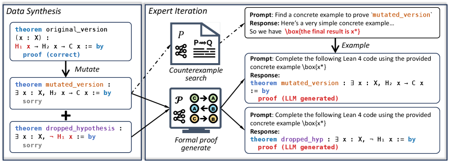
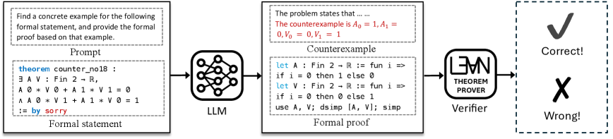
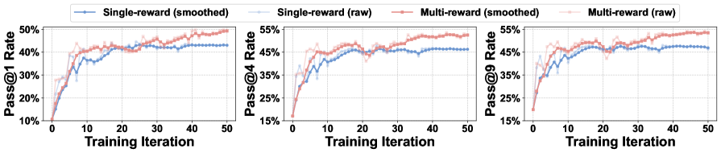

Fine-tunes LLMs to generate counterexamples with Lean 4 formal proofs, using a custom Lean `mutate` tactic on Mathlib and other seed theorems.
Abstract
Mathematical reasoning demands two critical, complementary skills: constructing rigorous proofs for true statements and discovering counterexamples that disprove false ones. However, current AI efforts in mathematics focus almost exclusively on proof construction, often neglecting the equally important task of finding counterexamples. In this paper, we address this gap by fine-tuning large language models (LLMs) to reason about and generate counterexamples. We formalize this task as formal counterexample generation, which requires LLMs not only to propose candidate counterexamples but also to produce formal proofs that can be automatically verified in the Lean 4 theorem prover. To enable effective learning, we introduce a symbolic mutation strategy that constructs candidate counterexample-generation tasks by systematically extracting theorems and removing selected hypotheses. Together with curated datasets, this strategy enables a multi-reward expert iteration framework that substantially enhances both the effectiveness and efficiency of training LLMs for counterexample generation and theorem proving. Experiments on three newly collected benchmarks validate the advantages of our approach, showing that the mutation strategy and training framework yield substantial performance gains.
Problem
AI work in formal mathematics concentrates on proving true statements and largely ignores disproving false ones with counterexamples. Training such models is held back by scarce training data and sparse reward signals.
Approach
A custom Lean 4 tactic, `mutate`, removes a necessary hypothesis from a provable theorem, which yields a statement that should have a counterexample. Seed theorems come from Mathlib, Lean Workbook, and subgoals extracted from LLM-generated proofs on MiniF2F and PutnamBench. Lean is used to remove redundant hypotheses before mutation and to check the mutated statements afterward. Expert iteration then fine-tunes the LLM with two rewards: whether the counterexample proves the mutated statement, and whether it violates the dropped hypothesis.

Figure 1: Framework of counterexample training. In the data synthesis stage, the symbolic mutation drops the hypothesis of a provable theorem, creating new counterexample problems. In the subsequent expert stage, two rewards are introduced based on whether the generated counterexample can prove the mutated version and dropped hypothesis, boosting training effectiveness and efficiency.

Figure 2: Task of formal counterexample generation. This task requires the LLM first to perform informal reasoning to identify a valid counterexample for the given problem, and then generate the corresponding formal proof, which is automatically verified by theorem provers (e.g., Lean 4).
Results
Mutation of about 322K seed theorems produced about 575K counterexample problems. On three new benchmarks, the trained model clearly outperforms proprietary reasoning models and open-source neural provers. Multi-reward training converges faster than single-reward training and reaches higher final performance.

Figure 3: Pass@ k ( k=1,4,9 ) rate curves on the validation set. Compared with the single-reward baseline, multi-reward training converges faster and yields superior final performance.
Model
@1
@4
@9
Leanabell-prover
25.4%
36.0%
39.9%
STP-prover
23.7%
33.2%
37.5%
Deepseek-prover-v2
14.1%
30.0%
36.2%
Ours
49.8%
52.7%
54.1%
Pass@k on the validation set versus the strongest baselines